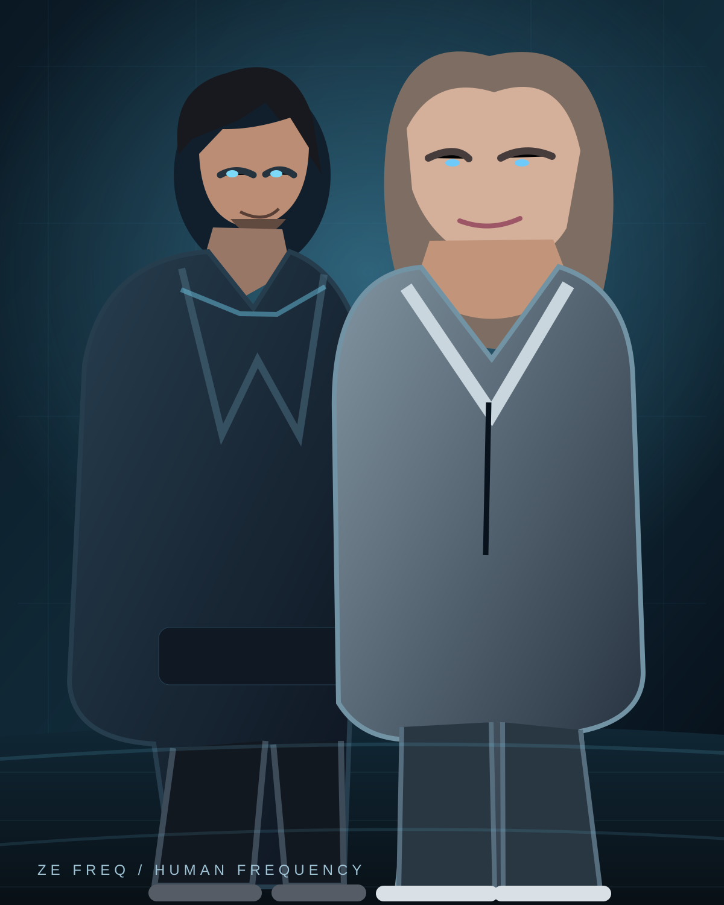
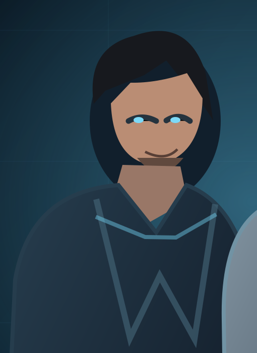
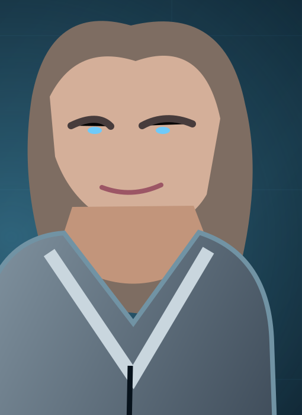

01 / КОНТАКТ
СВЯЗЬ
Два голоса ищут друг друга сквозь помехи. Каждая история начинается с контакта.
ДВА ГОЛОСА. ОДНА ЧАСТОТА.
Два голоса на одной волне. Истории о близости, столкновении характеров и чувствах, которым трудно найти слова.

ZeFREQ — это мир сигналов: два голоса, одна связь и истории, которые рождаются между ними.
Два голоса ищут друг друга сквозь помехи. Каждая история начинается с контакта.
Нежность и напряжение могут существовать одновременно. Именно тогда рождается неожиданное.
Первый сигнал — только начало. Новые песни постепенно раскроют этот мир.
Два контрастных тембра работают как единый инструмент. Один добавляет напряжение, другой — тепло.


Первый сигнал обретает форму: два голоса пытаются найти друг друга среди городского шума и огней. Дата выхода и ссылки на стриминги появятся здесь после официальной публикации.
ZeFREQ — независимый электронный дуэт, построенный вокруг двух непохожих голосов и одного вымышленного мира. Каждая песня — новая часть их разговора.
Мы рассказываем истории о расстоянии, близости, памяти и надежде, что на другом конце всё ещё кто-то слышит. За любым шумом остаётся что-то человеческое.
«ДВА ГОЛОСА. ОДНА ЧАСТОТА.»
ZeFREQ только начинает свою историю. Новая музыка и официальные страницы появятся здесь после запуска.
Наверх